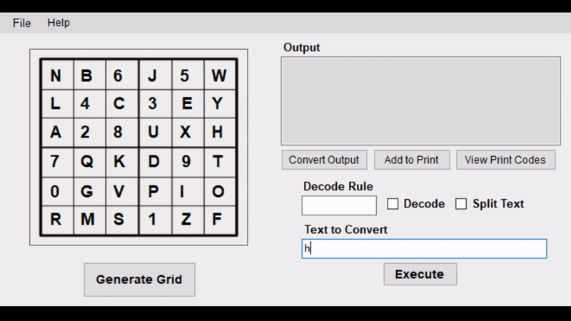
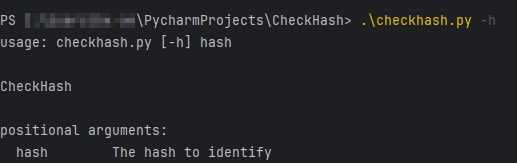
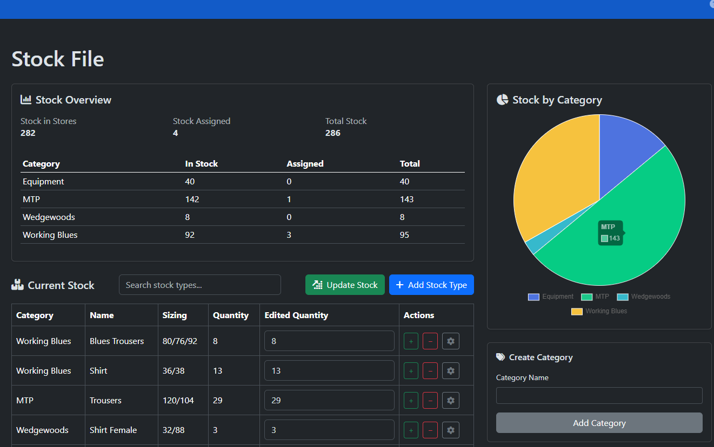

BletchleyMaker
An installable program which provides support for Air Cadet cryptography. The purpose of this tool is to encode sentences and create decode grids for the Air Cadet Bletchley Park cipher. This automates the process of making codes for Air Cadet activities.
View Project | Download

CheckHash
A python console program which takes in an argument (the hash), and compares it with hashing algorithms to determine the type of hash. This program is still in development.
View Project

StoreStash
StoreStash is a stock management solution which records stored stock, as well as stock assigned to individuals. This software allows editors to assign items to people and keep track of how stock moves. Access to this application is limited to stakeholders.
View Project View Demo